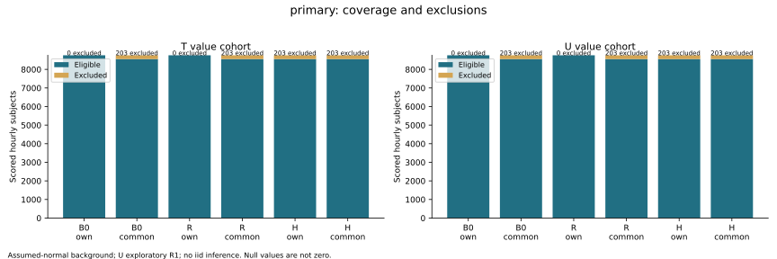

Results and Evidence
Figures and timelines
The SVG figures are unchanged. Plotted-data downloads retain all values; personal folder prefixes are removed from evidence paths.
Read, copy or download the complete Python code ↓
Review all 52 original figures in their six prescribed groups, with the data behind each figure.
How to read the figures
Connect each chart to a finding
Start with the variable, evaluation pass and figure group. Read detection together with misses and coverage; inspect the continuous background burden separately. Use the matching plotted-data JSON to check the values behind a pattern. A displayed relationship is descriptive evidence from the declared comparison, not proof of a physical sensor fault.
The figures support a qualified conclusion: hybrid monitoring detected some gradual-bias cases missed by simpler checks, while retaining misses and background alarms. Humidity remains exploratory. Any operational recommendation would need an agreed alarm budget and further validation on representative data.
All 52 original SVGs are retained with unchanged plotted-data files. Figures have fixed labelled scopes independent of table filters. F1 coverage; F2 signed bias heatmaps; F3 detection and burden; F4 common-hit delay and misses; F5 monthly descriptions; F6 fixed-rule timelines. Timeline truth overlays are post-run evaluation.
Choose a figure
Select a figure group and an evaluation pass. One figure is shown at a time. Use Previous and Next when a selection contains two bias directions or several timeline examples.
Which opportunities were available for evaluation.
F1 — Coverage · Primary evaluation

F1-primary.svg
Open original figure in a new tabPlotted data (JSON)
The complete saved data file for the figure above. The panel scrolls so you can inspect every entry.
Open JSON in a new tab · Download JSON
Use the JSON link to open the saved data.
Complete Python code
Visualization and communication
figures.py creates the study plots; report.py assembles the evidence outputs. Compare the implementation with the original figure and matching plotted-data JSON above.
The selected file is displayed in full below. Choose another file to read its complete code. Imports may require related files, configuration and saved inputs. Environment requirements · Full-study prerequisites.
Creates the study figure groups from saved results and records the plotted data. Use the separate reporting requirements; the website displays already generated figures.
source/result-analysis/figures.py · 179 lines · Complete file
"""Matplotlib exports with exact plotted values, nulls and source identifiers."""
from collections import defaultdict
from datetime import datetime, timedelta
import json
import os
import sys
from evidence import HERE,PASSES,CONFIGS,MONTHS,save
def draw(folder,roots,background,burdens,summaries,contrasts,selection,fixture=False):
os.environ['MPLCONFIGDIR']=str(HERE/'matplotlib-cache')
sys.path.insert(0,str(HERE/'reporting-packages'))
import matplotlib
matplotlib.use('Agg')
import matplotlib.pyplot as plt
import numpy as np
plt.rcParams.update({'font.size':9,'axes.spines.top':False,'axes.spines.right':False,'svg.fonttype':'none'})
dest=folder/'figures';dest.mkdir();index=[]
colors={'B0':'#677583','R':'#bf7d1c','H':'#216f83'}
def finish(fig,name,group,title,data):
fig.suptitle(title+(' — FABRICATED CHECK' if fixture else ''),fontsize=13)
fig.tight_layout(rect=(0,0.03,1,.95))
fig.text(.01,.005,'Assumed-normal background; U exploratory R1; no iid inference. Null values are not zero.',fontsize=8)
fig.savefig(dest/(name+'.png'),dpi=160);fig.savefig(dest/(name+'.svg'));plt.close(fig)
save(dest/(name+'-data.json'),data)
index.append(dict(group=group,name=name,title=title,png=name+'.png',svg=name+'.svg',data=name+'-data.json'))
for pass_id in PASSES:
if not any(r['pass']==pass_id for r in roots):continue
print('FIGURES '+pass_id,flush=True)
# F1: common and own eligible/excluded counts, with exclusion reasons retained in plotted-data file.
data=[r for r in background if r['pass']==pass_id and r['task']=='value']
fig,axes=plt.subplots(1,2,figsize=(12,4))
for ax,var in zip(axes,('T','U')):
groups=[(cfg,cohort) for cfg in CONFIGS for cohort in ('own','common')]
eligible=[sum(r['n'] for r in data if r['variable']==var and (r['configuration'],r['cohort'])==g) for g in groups]
excluded=[sum(r['excluded_scored'] for r in data if r['variable']==var and (r['configuration'],r['cohort'])==g) for g in groups]
x=np.arange(len(groups));ax.bar(x,eligible,label='Eligible',color='#216f83');ax.bar(x,excluded,bottom=eligible,label='Excluded',color='#d4a553')
ax.set_xticks(x,[a+'\n'+b for a,b in groups]);ax.set_title(var+' value cohort');ax.set_ylabel('Scored hourly subjects')
for xx,n in zip(x,excluded):ax.text(xx,eligible[xx]+n,str(n)+' excluded',ha='center',fontsize=7)
ax.legend(fontsize=8)
finish(fig,'F1-'+pass_id,1,pass_id+': coverage and exclusions',data)
# F2: no sign pooling; each cell retains hits and paired denominator.
for sign,support in [(s,p) for s in (-1,1) for p in sorted({r['support'] for r in roots if r['pass']==pass_id and r['family']=='gradual_bias'})]:
fig,axes=plt.subplots(2,3,figsize=(12,6));data=[]
for row,var in enumerate(('T','U')):
for col,cfg in enumerate(CONFIGS):
matrix=np.full((3,3),np.nan)
for y,amp in enumerate((.5,1,2)):
for x,duration in enumerate((24,72,168)):
rs=[r for r in roots if r['pass']==pass_id and r['family']=='gradual_bias' and r['variable']==var and
r.get('sign')==sign and r['support']==support and r.get('scale_multiple')==amp and r.get('ramp_hours')==duration and r['paired']]
n=len(rs);hits=sum(r['configurations'][cfg]['category']=='hit' for r in rs)
if n:matrix[y,x]=hits/n
data.append(dict(variable=var,configuration=cfg,sign=sign,amplitude=amp,ramp_hours=duration,hits=hits,paired=n,
value=hits/n if n else None,contributions=[r['job_id'] for r in rs]))
axes[row,col].text(x,y,f'{hits}/{n}' if n else 'null',ha='center',va='center',color='black')
ax=axes[row,col];ax.imshow(matrix,vmin=0,vmax=1,cmap='YlGnBu',alpha=.65)
ax.set_xticks(range(3),[24,72,168]);ax.set_yticks(range(3),[.5,1,2]);ax.set_xlabel('Ramp hours (equal hold follows)')
ax.set_ylabel('Frozen residual scales');ax.set_title(var+' / '+cfg)
finish(fig,f'F2-{pass_id}-sign-{sign}-{support}',2,f'{pass_id}: gradual-bias detection, sign {sign:+d}, support {support}',data)
# F3: explicitly paired domains; record-level availability outcomes shown against each dependent variable separately.
groups=sorted({(r['family'],r['variable'],r['support']) for r in roots if r['pass']==pass_id},key=str)
panels=[]
for family,var,support in groups:
domain='value' if family in ('gradual_bias','out_of_range') else 'availability' if family in ('missing_cell','absent_row') else 'timestamp'
for bgvar in (('T','U') if domain=='availability' and var is None else (None,) if domain=='timestamp' else (var,)):
panels.append((family,var,support,domain,bgvar))
fig,axes=plt.subplots((len(panels)+2)//3,3,figsize=(13,3.1*((len(panels)+2)//3)),squeeze=False);data=[]
for ax,panel in zip(axes.flat,panels):
family,var,support,domain,bgvar=panel
for cfg in CONFIGS:
s=next((r for r in summaries if r['pass']==pass_id and r['month']=='annual' and
(r['family'],r['variable'],r['support'],r['configuration'])==(family,var,support,cfg)),None)
b=next((r for r in burdens if r['pass']==pass_id and r['month']=='annual' and r['cohort']=='common' and
(r['task'],r['variable'],r['configuration'])==(domain,bgvar,cfg)),None)
x=b['burden']['value'] if b else None;y=s['detection']['value'] if s else None
data.append(dict(family=family,scenario_variable=var,support=support,configuration=cfg,domain=domain,background_variable=bgvar,
burden=x,detection=y,burden_source=b,event_source=s))
if x is not None and y is not None:ax.scatter(x,y,color=colors[cfg],label=cfg);ax.annotate(cfg,(x,y),xytext=(3,3),textcoords='offset points',fontsize=8)
else:ax.text(.02,.05+.08*CONFIGS.index(cfg),cfg+': null burden/detection',transform=ax.transAxes,fontsize=7)
ax.set_title(f'{family} / {var or "record"} / {support}',fontsize=9);ax.set_ylim(-.05,1.05)
ax.set_ylabel('Root detection');ax.set_xlabel(f'{bgvar or "records"}: segments / '+('1,000 negatives' if domain=='timestamp' else '720 negative hours'))
for ax in list(axes.flat)[len(panels):]:ax.set_visible(False)
finish(fig,'F3-'+pass_id,3,pass_id+': detection versus continuous common-normal burden',data)
# F4: all common-hit differences, with unmatched counts retained and labelled.
fig,axes=plt.subplots(3,1,figsize=(13,9));data=[]
for ax,comp in zip(axes,('H-B0','R-B0','H-R')):
rows=[r for r in contrasts if r['pass']==pass_id and r['month']=='annual' and r['comparison']==comp]
for x,r in enumerate(rows):
vals=[h['difference_seconds']/3600 for h in r['common_hits']]
ax.scatter([x]*len(vals),vals,alpha=.4,s=9,color='#216f83')
ax.text(x,.98,f'both {len(vals)}\nA only {len(r["first_only"])}\nB only {len(r["second_only"])}\nneither {len(r["neither"])}',
transform=ax.get_xaxis_transform(),ha='center',va='top',fontsize=6)
ax.set_xticks(range(len(rows)),[r['family']+'\n'+str(r['variable']) for r in rows],fontsize=7)
ax.axhline(0,color='#888',lw=.7);ax.set_ylabel(comp+' delay difference (hours)');ax.margins(y=.4)
values=[h['difference_seconds']/3600 for r in rows for h in r['common_hits']]
if not values:
ax.set_ylim(-1,1);ax.text(.5,.45,'No common hits: delay comparison is undefined',transform=ax.transAxes,ha='center',color='#667783')
elif min(values)==max(values):ax.set_ylim(values[0]-.5,values[0]+.5)
data.extend(rows)
finish(fig,'F4-'+pass_id,4,pass_id+': common-hit delay; unmatched hits and misses retained',data)
# F5: monthly rates, coverage and matched detection contrasts.
fig,axes=plt.subplots(2,3,figsize=(14,7));data=[]
for i,var in enumerate(('T','U')):
for cfg in CONFIGS:
rows=sorted((r for r in background if r['pass']==pass_id and r['task']=='value' and r['variable']==var and
r['configuration']==cfg and r['cohort']=='common'),key=lambda r:r['month'])
data.extend(rows)
for col,metric in enumerate(('fpr','coverage')):
y=[r[metric]['value'] if r[metric]['value'] is not None else np.nan for r in rows]
axes[i,col].plot(range(1,len(rows)+1),y,label=cfg,color=colors[cfg],marker='.',lw=1)
axes[i,col].set_title(var+' / '+metric);axes[i,col].set_xlabel('Original source month');axes[i,col].legend(fontsize=7)
rows=[r for r in contrasts if r['pass']==pass_id and r['month']!='annual' and r['variable']==var and r['comparison']=='H-B0']
for family,support in sorted({(r['family'],r['support']) for r in rows}):
rs=sorted((r for r in rows if (r['family'],r['support'])==(family,support)),key=lambda r:r['month'])
axes[i,2].plot(range(1,len(rs)+1),[r['detection_difference']['value'] if r['detection_difference']['value'] is not None else np.nan for r in rs],label=family+'/'+support)
axes[i,2].set_title(var+' / H-B0 detection contrast');axes[i,2].set_xlabel('Original source month');axes[i,2].legend(fontsize=7)
data.extend(rows)
finish(fig,'F5-'+pass_id,5,pass_id+': monthly rates, coverage and paired contrasts',data)
# F6: same fixed-selected cases for every configuration; full evidence remains next to each plot.
for s in selection:
if s['status']!='selected':
fig,ax=plt.subplots(figsize=(8,3));ax.axis('off');ax.text(.5,.5,'No effective case: this family is unavailable.\nNo other family is substituted.',ha='center')
finish(fig,'F6-'+s['pass']+'-'+s['family']+'-unavailable',6,s['pass']+' / '+s['family'],s)
continue
path=folder/'timelines'/s['job_id']
if not path.exists():continue
root=json.loads((path/'post-run-root.json').read_text());onset=datetime.fromisoformat(root['planned_onset'])
rows=[];states=[];timestamp_rows=[];value_rows=[]
with (path/'injected-summaries.jsonl').open() as f:
for line in f:rows.append(json.loads(line))
with (path/'injected-states.jsonl').open() as f:
for line in f:states.append(json.loads(line))
with (path/'injected-ledger.jsonl').open() as f:
for line in f:
r=json.loads(line)
if r['check'] in ('Q04','Q05','Q06'):timestamp_rows.append(r)
elif r['check']=='Q03' and r['configuration']=='B0':value_rows.append(r)
settings=json.loads((path/'injected-run.json').read_text()).get('settings',{})
fig,axes=plt.subplots(7,1,figsize=(13,13),sharex=True)
for ax,var in zip(axes[:2],('T','U')):
data=[r for r in states if r['variable']==var]
xs=[(datetime.fromisoformat(r['slot_utc'])-onset).total_seconds()/3600 for r in data]
observations=[r for r in value_rows if r['variable']==var]
ax.plot([(datetime.fromisoformat(r['emitted_at'])-timedelta(minutes=5)-onset).total_seconds()/3600 for r in observations],
[r['evidence'].get('value',np.nan) for r in observations],lw=.8,label='Aligned target / Q03 input')
ax.plot(xs,[r['model_prediction'] if r.get('model_prediction') is not None else np.nan for r in data],lw=.8,label='Frozen prediction')
ax.set_ylabel(var+(' (°C)' if var=='T' else ' (%)'));ax.legend(loc='upper right',fontsize=7)
for ax,var in zip(axes[2:4],('T','U')):
data=[r for r in states if r['variable']==var]
# Full source window is shown. Missing numeric states remain visible as gaps.
ax.plot([(datetime.fromisoformat(r['slot_utc'])-onset).total_seconds()/3600 for r in data],
[r.get('z') if r.get('z') is not None else np.nan for r in data],lw=.8,label=var+' EWMA state')
ax.set_ylabel(var+' z (standardised)');ax.legend(loc='upper right',fontsize=7)
if isinstance(settings,dict) and var in settings:
cutoff=settings[var]['cutoff'];ax.axhline(cutoff,color='#a94735',ls=':',lw=.8);ax.axhline(-cutoff,color='#a94735',ls=':',lw=.8)
for ax,domain in zip(axes[4:6],('value','availability')):
for i,cfg in enumerate(CONFIGS):
for v,var in enumerate(('T','U')):
rs=[r for r in rows if r['configuration']==cfg and r['domain']==domain and r['variable']==var]
for status,marker,color in ((True,'|','#a94735'),(None,'x','#7b8794')):
xs=[(datetime.fromisoformat(r['slot_utc'])-onset).total_seconds()/3600 for r in rs if r['prediction'] is status]
ax.scatter(xs,[i*2+v]*len(xs),marker=marker,s=7,color=color)
ax.set_yticks(range(6),[c+'/'+v for c in CONFIGS for v in ('T','U')],fontsize=7);ax.set_ylabel(domain)
ax=axes[6]
for i,cfg in enumerate(CONFIGS):
for j,check in enumerate(('Q04','Q05','Q06')):
for prediction,marker,color in ((True,'|','#a94735'),(None,'x','#7b8794')):
rs=[r for r in timestamp_rows if r['configuration']==cfg and r['check']==check and r['prediction'] is prediction and r['execution']!='inapplicable']
ax.scatter([(datetime.fromisoformat(r['emitted_at'])-onset).total_seconds()/3600 for r in rs],[i*3+j]*len(rs),marker=marker,s=8,color=color)
ax.set_yticks(range(9),[c+'/'+q for c in CONFIGS for q in ('Q04','Q05','Q06')],fontsize=6);ax.set_ylabel('Timestamp tasks')
for ax in axes:
ax.axvspan(0,root['length_hours']-1,color='#e4c679',alpha=.2);ax.axvline(0,color='#93763b',lw=.8)
axes[-1].set_xlabel('Hours from planned onset (UTC); shaded interval is a post-run truth overlay. Red | flag; grey x unevaluated.')
finish(fig,'F6-'+s['job_id'],6,s['family']+' / '+s['reason']+' / onset '+root['planned_onset'],dict(selection=s,root=root,
sources='timelines/'+s['job_id'],all_configurations_same_case=True))
save(dest/'index.json',index)
save(dest/'environment.json',dict(matplotlib=matplotlib.__version__,numpy=np.__version__,python=sys.version,
scope='Reporting-only packages outside frozen scientific environment'))
These complete public source files document the study. Additional inputs are needed to reproduce the full experiment. See the on-site requirements and source-copy scope. The website does not execute Python.